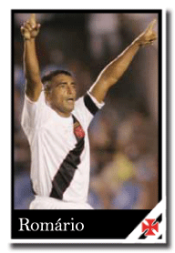
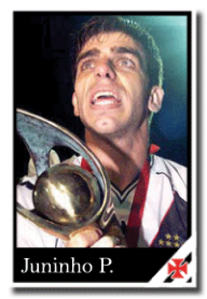
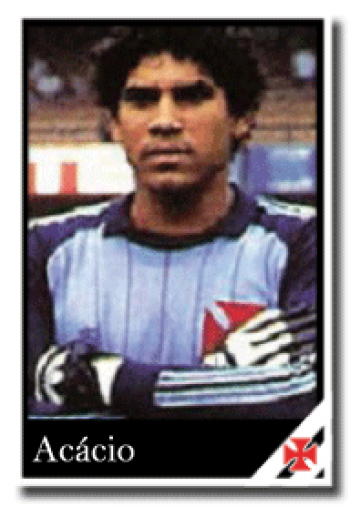
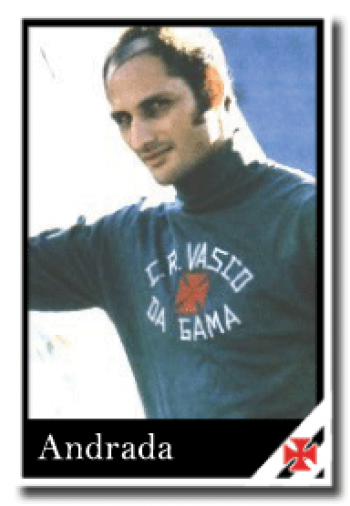
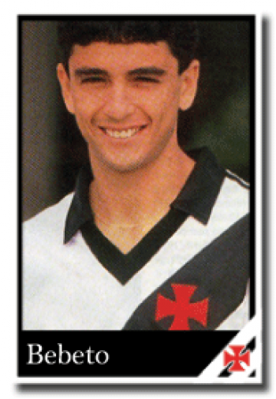
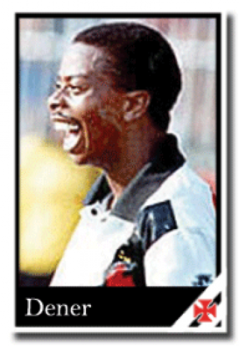
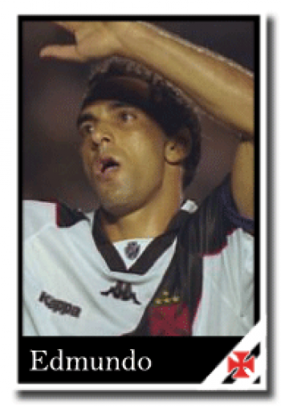
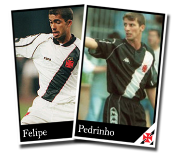
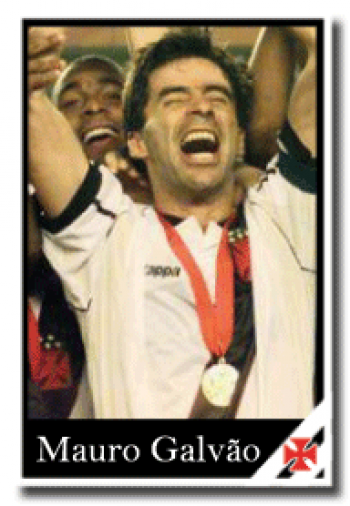
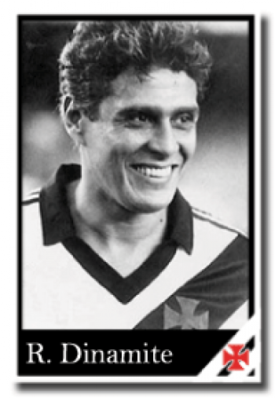

Romário - Romário de Souza Faria

Revelado nas categorias de base do Vasco, o atacante surgiu no time profissional em 1985 O ?Baixinho? teve quatro passagens pelo time de São Januário. Além dos títulos que conquistou vestindo a camisa cruzmaltina, a história de Romário de Souza Faria ainda tem um ponto especial: o gol mil foi marcado em São Januário no dia 20 de maio de 2007, contra o Sport. Após cruzamento do lateral-direito Thiago Maciel, o zagueiro do time pernambucano, Durval, botou a mão na bola dentro da grande área. Giuliano Bozzano apitou a infração e sinalizou para dentro da área da equipe de Recife. A Colina ficou inflamada com a marcação da penalidade! Todos no estádio sabiam que um fato histórico para o futebol mundial estava para acontecer. Com a classe e frieza já habituais, o baixinho converteu o pênalti, tirando a bola do alcance de Magrão. Nada mais justo com a história do clube e do gênio da grande área, afinal a maioria dos gols do camisa 11 saiu pelo time vascaíno. Foram 324 vezes que Romário balançou a rede adversária atuando pelo Gigante da Colina. Em 1994, participou da conquista da Copa do Mundo pela seleção brasileira e foi escolhido o melhor jogador do mundo pela FIFA. Romário conquistou o Campeonato Carioca de 1987 e 1988, o Brasileiro de 2000 e a Copa Mercosul , do mesmo ano, pelo Gigante da Colina. Artilharias conquistadas no Vasco: ? 1986 - Artilheiro do Campeonato Carioca (20 gols) ? 1987 - Artilheiro do Campeonato Carioca (16 gols) ? 2000 - Artilheiro do Mundial de Clubes da FIFA (3 gols) ? 2000 - Artilheiro do Campeonato Carioca (19 gols) ? 2000 - Artilheiro da Copa Mercosul (11 gols) ? 2000 - Artilheiro do Torneio Rio-São Paulo (12 gols) ? 2000 ? Artilheiro do Campeonato Brasileiro (20 gols) 2001 Artilheiro do Campeonato Brasileiro (21 gols) 2005 Artilheiro do Campeonato Brasileiro (22 gols)
Juninho Pernambucano - Antônio Augusto Ribeiro Reis Júnior

Antônio Augusto Ribeiro Reis Júnior, o Juninho Pernambucano, chegou à Colina em 1995. Logo em seu primeiro ano em São Januário o meio-campo brilhou e chamou a atenção da comissão técnica e torcedores. Especialista em cobranças de falta, o jogador também tinha o passe e o drible como virtudes. Esteve presente em todas as grandes conquistas recentes dos vascaínos. De 1997 até 2000, o meia conquistou vários títulos. Dois títulos que o atleta foi peça decisiva, por exemplo, foram os canecos da Taça Libertadores da América, em 1998 (Juninho fez um gol histórico contra o River Plate no Estádio Monumental de Núñez em Buenos Aires, pelo segundo jogo da semifinal do campeonato) e da Copa Mercosul, em 2000, quando o jogador segurava com bravura a cruz de malta e beijava-a no apito final da partida decisiva contra o Palmeiras (na virada do século, por 4 a 3, em pleno Palestra Itália). Não é à toa que o apelido de ?Reizinho da Colina? foi dado a Juninho. O meio-campo sempre se identificou com o Clube e jogou com raça. Até os dias de hoje, são entoados gritos da torcida que relembram o jogador.
Acácio - Acácio Cordeiro Barreto

Em 1982 teve sua chegada ao Vasco marcada por uma grande missão: assumir o lugar de Mazaropi. Na reta final do campeonato de 1982, o então técnico do Vasco Antônio Lopes, modificou cinco posições do time, a começar pelo goleiro, e assim Acácio passou a titular no lugar do Mazaropi. Na sua primeira temporada no clube já conquistou o título do campeonato carioca. Durante os nove anos seguidos, Acácio se tornou o dono absoluto da camisa 1 vascaína, com exceção apenas no ano de 1984, quando fez revezamento com Roberto Costa. Em 1987 e 1988, o goleiro conquistou com o clube, o bicampeonato Carioca. No ano de 1988, Acácio conseguiu uma marca inesquecível para sua carreira, quando permaneceu 879 minutos sem sofrer gols. Assim, Acácio Cordeiro Barreto entrou para a história do Campeonato Brasileiro, como o quarto maior tempo de um goleiro sem levar gols. No ano de 1989, além de levantar o caneco do tricampeonato do Troféu Ramón de Carranza (em 87 e 88 os títulos foram vascaínos), o arqueiro contribuiu o segundo título nacional do Vasco. Durante a competição, Acácio foi um dos destaques do Gigante da Colina, inclusive na partida decisiva do campeonato. Na ocasião o Vasco venceu o São Paulo por 1 a 0, em pleno Morumbi, e com uma das melhores atuações do goleiro com a camisa vascaína, o Clube da Cruz de Malta venceu a competição naquele ano.
Andrada - Edgard Norberto Andrada

O goleiro argentino Andrada fez história no Vasco por suas defesas milagrosas, que evidenciavam o reflexo e a colocação do arqueiro. De 1969 até 1975, Edgard Norberto Andrada defendeu a baliza vascaína, e se destacou nas conquistas do campeonato carioca de 1970 e no Brasileirão de 74. Era sempre aclamado pelos torcedores cruzmaltinos nas partidas. Vale lembrar que, em função de suas defesas inacreditáveis, e com perfeitas reposições de bola, o goleiro conquistou um prêmio individual. A Bola de Prata, concedida pela revista Placar, no ano de 1971.
Bebeto - José Roberto Gama de Oliveira

Após entrar em litígio com o rival rubro-negro, o técnico e veloz atacante foi contratado pelo Vasco, diante de grande investimento do cruzmaltino. Em 1989, José Roberto Gama de Oliveira mostrou ao que veio. Sagrou-se campeão brasileiro daquele ano e foi peça fundamental naquele feito. De quebra, ainda conquistou também o Troféu Ramón de Carranza. Além dessas vitórias, o jogador ainda foi considerado o melhor da América do Sul naquela temporada. No ano seguinte era figura certa na convocação da Copa do Mundo, porém, uma grave lesão tirou o atleta da competição. Depois de passar um tempo se adaptando aos gramados, após o período inativo, o jogador ofensivo brilhou no ano de 1992. Foi um dos ícones do time que disputou o campeonato carioca e brasileiro da temporada. Prova disso é que Bebeto foi o artilheiro do torneio nacional, com 18 gols, e levantou o caneco da competição regional.
Dener Augusto de Souza
Dener Augusto de Souza era um atacante leve, habilidoso e muito veloz. O jogador negro e franzino, com 1,71m de altura, não se intimidava com os zagueiros adversários, e mostrava muita alegria e classe ao encará-los. Depois de brilhar nas categorias de base da Portuguesa de Desportos, o atleta chegou ao Vasco em 1994. Neste mesmo ano o jovem promissor já despertava alvoroço na torcida vascaína, pois logo no começo de sua trajetória o Campeonato Carioca daquela temporada havia sido conquistado. Infelizmente, aquela brilhante carreira, que só tinha dado seus primeiros passos, terminou de forma prematura. No dia 19 de maio de 94, o atacante de apenas 23 anos, sofreu um acidente automobilístico, voltando de São Paulo para o Rio de Janeiro, na Lagoa Rodrigo de Freitas, e não resistiu.
Edmundo - Edmundo Alves de Souza Neto

O atacante fez questão de transparecer seu sentimento vascaíno em todos os seus momentos como jogador de futebol. Sem dúvidas, está entre os seletos ídolos da história do Vasco. Mesmo quando não estava atuando pelo clube da Colina, Edmundo Alves de Souza Neto deixava claro o seu amor pelo time, evidenciando que fazia parte da massa de torcedores cruzmaltinos. Iniciou sua trajetória em 1992, depois de ter se destacado nas categorias de base de São Januário. Logo em seu primeiro ano como profissional foi considerado o melhor jogador do campeonato carioca, após o Vasco ter faturado a competição de forma invicta. Depois de passar por Palmeiras e outros clubes, retornou ao Vasco em 1996, depois de três anos distante. Logo no ano seguinte o jogador foi considerado o melhor do Campeonato Brasileiro. Quebrou o recorde de Reinaldo, ex-atacante do Atlético-MG, e totalizou 29 gols marcados na competição nacional. O histórico vigésimo nono gol surgiu justamente contra o maior rival Flamengo. Se já não bastasse ter sido arrasado por 4 a 1, o rubro-negro ainda ficou marcado no gol de número 29 do artilheiro. Após o título de 97, o atacante se transferiu para a Fiorentina (ITA). Ainda retornou para São Januário em três oportunidades diferentes: em 1999, 2003 e 2008. Sempre demonstrando sua forte ligação com o clube cruzmaltino, o ?Animal? sempre morou no coração dos vascaínos.
Felipe e Pedrinho - Felipe Jorge / Pedro Paulo de Oliveira

A história desses dois jogadores começou a ser escrita no Vasco no ano de 1995, quando os dois foram promovidos à equipe principal. Os canhotos sempre se destacaram jogando nas categorias de base do clube, em grande parte dos anos, no futsal. O currículo dos atletas é invejável: até a temporada de 2000 os vascaínos faturaram grandiosos títulos. Começaram com o Campeonato Brasileiro de 1997, depois conquistaram a Copa Libertadores, no ano seguinte, e levantaram a taça do Tornei Rio-SP em 1999. Porém o ano de 2000 foi o mais marcante para a dupla. O título da Copa Mercosul, em uma final histórica do futebol brasileiro, e a Campeonato Brasileiro foram competições que estão registradas para sempre na trajetória do Clube da Colina. Após todas essas vitórias, o lateral-esquerdo (que nessa época já começava a atuar na meia) Felipe Jorge, e o meia-atacante Pedro Paulo de Oliveira rumaram para o Palmeiras. Pedrinho voltou a atuar pelo time vascaíno em Setembro de 2008, para a disputa da segunda parte do Brasileiro. Já Felipe retornou a São Januário em Junho de 2010, depois de nove anos longe da instituição que o projetou. Joga até os dias de hoje no Clube da Colina.
Mauro Galvão - Mauro Geraldo Galvão

Chegou ao Vasco já aos 35 anos, mas com ótimo vigor físico, classe e espírito de liderança. O zagueiro e capitão da equipe foi contratado em 1997 e permaneceu no Clube até 2000. Durante esse tempo o lendário defensor levantou canecos com o da Libertadores, em 1998, no Ano do Centenário, do Campeonato Estadual do mesmo ano (onde o zagueiro fez o gol do título nos minutos finais da partida) e do Torneio Rio-SP de 1999. Também esteve presente nas conquistas da Mercosul e do Brasileirão, ambas em 2000. Em 1998, já com 36 anos, Mauro Geraldo Galvão era muito cogitado para ir à Copa do Mundo, pois era o melhor zagueiro brasileiro em atividade. Porém, alegando sua idade, a seleção não o levou para a competição mundial.
Roberto Dinamite - Carlos Roberto Dinamite de Oliveira

O jogador que surgiu para o futebol dando fortes chutes para o gol adversário, teve uma bonita trajetória dentro de São Januário e é um dos maiores ídolos do clube até hoje, senão o mais importante deles . Carlos Roberto de Oliveira foi o atleta que mais atuou pelo time de futebol do Vasco. Dinamite fez 617 gols pela equipe profissional do Vasco em 1016 jogos. Roberto fez sua primeira como profissional em 1971, com 17 anos, diante da equipe do Bahia. O jogador encerrou seu ciclo no Gigante da Colina aos 39 anos, no ano de 1993, em um confronto amistoso diante do La Coruña (ESP). Os números do ídolo transparecem por si só o destaque de seus feitos pelo Clube. Conquistas pelo Vasco: Campeonato Brasileiro: 1974 Campeonato Carioca: 1977, 1982, 1987, 1988 e 1992 Taça Guanabara: 1976, 1977, 1986, 1987, 1990 e 1992 Taça Rio: 1975, 1977, 1980, 1981, 1984 e 1988 Copa Rio: 1984, 1988 e 1992 Copa Cidade de Sevilla (ESP): 1979 Troféu Colombino (Huelva, ESP): 1980 Torneio Quadrangular do Rio: 1973 Copa Manauense: 1980 Troféu Cidade de Funchal (POR): 1981 Copa João Havelange: 1981 Torneio de Verão: 1982 Troféu Ramón de Carranza (ESP): 1987 e 1988 Copa de Ouro: 1987 Copa do Rei Pelé: 1991 Conquistas Individuais e artilharias: ? Bola de Prata da Revista Placar: 1979, 1981 e 1984 - Artilheiro do Brasileiro da Série A: 1974 (16 gols) e 1984 (16 gols). - Artilheiro do campeonato Carioca: 1978 (19 gols), 1981 (31 gols) e 1985 (12 gols) - Artilheiro da Copa América: 1983 (3 gols). Medalha do Mérito Desportivo, outorgada pelo então Presidente da República, José Sarney